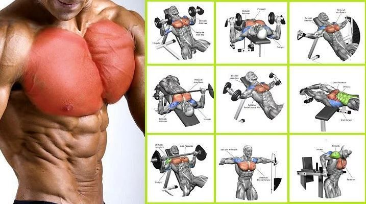
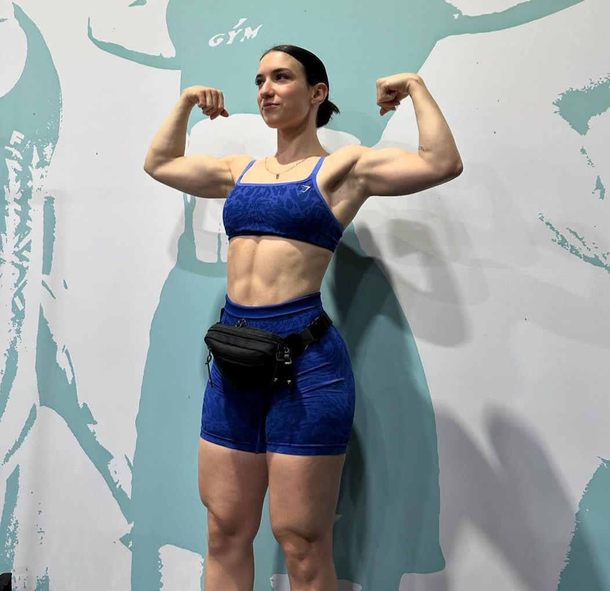

R.MENU
Un pectoral desarrollado es la sena de identidad de un hombre grande y fuerte.Tambien las mujeres pueden obtener beneficios de las rutinas de pecho. Aunque no se puede aumentar el volumen de la mama con entrenamiento, si que se puede mejorar la forma y tonificacion de las mismas.Ademas, estas rutinas suelen incluir un movimiento basico muy aceptado generalmente como medida de la fuerza
No os olvideis nunca de calentar bien la zona de trabajo. Os recomiendo pasar cinco o seis minutos en la maquina de andar o en la de escaleras para aumentar la temperatura corporal.Empezad con poco peso en el primer ejercicio de press. Por ejemplo, si realizais un press con mancuernas con 45 kilos y 10 repeticiones, el calentamiento debe ser:

El orden de los ejercicios se sale del habitual, ya que mezclamos ejercicios multiarticulares con ejercicios de aislamiento.El rango de repeticiones es amplio para trabajar la mayor cantidad de fibras musculares posibles.
| ejercicio | Series | Repeticiones |
| Press Inclinado en Multipower o Press de Banca | 6 | 15,15,8,8,6,20 | Aperturas de pecho en maquina | 4 | 12,12,10,8 | Press en banco plano con mancuernas o Inclinado | 3 | 10 | Cruces en polea alta | 3 | 15,12,12 |

Si eres un completo principiante lo principal es que vayas desarrollando tu conexion musculo-mental. Para ello, las maquinas pueden ser muy utiles.
| ejercicio | Series | Repeticiones |
| Press de pecho en maquina de discos | 4 | 10,10,12,12 | Press Inclinado en maquina | 3 | 10,10,10 | Aperturas con mancuernas en banco plano | 3 | 10,10,10 |
El uso de series gigantes es una tecnica que nos permite aumentar la intensidad del entrenamiento y ademas reducir el tiempo del mismo. Una serie gigante consiste de cuatro o mas ejercicios realizados seguidos sin descanso como medio de incrementar la intensidad y potencias el desarrollo. Haced una serie de cada ejercicio sin descansar hasta el final; eso es una serie gigante.Descansad tres minutos entre cada serie gigante.
| ejercicio | Series | Repeticiones |
| Aperturas en banco inclinado | 4 | 10,10,10,10 | Press declinado con mancuernas | 4 | 10,10,10,10 | Aperturas en maquina | 4 | 10,10,10,10 |